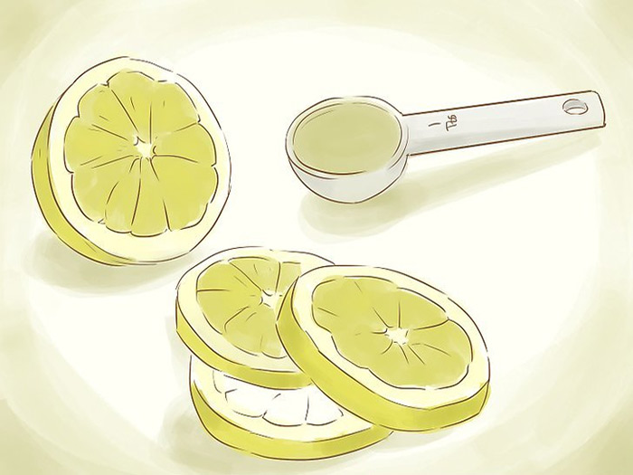

چگونه پروتئین وی خانگی درست کنیم؟ طرز تهیه پروتئین وی
پودر پروتئین به دلیل فوایدی که روی عضله سازی، ترمیم بافتهای آسیب دیده و ریکاوری بدن دارد، به یکی از محبوبترین مکملهای غذایی و ورزشی تبدیل شده است. پودرهای پروتئینی بر اساس ماده اصلی تشکیل دهنده آن، انواع مختلفی دارند، مانند پروتئین وی ( آب پنیر)، سویا و کازئین. پروتئین آب پنیر (Whey) بیشتر مورد استفاده است، چون میتوان آن را یک پروتئین کامل دانست چرا که شامل همه ۹ آمینو اسید ضروری است، ما نیز در این مطلب آموزش درست کردن پروتئین وی خانگی را برایتان توضیح میدهیم.
پروتئین وی چگونه تولید میشود؟
از فرایند تولید پنیر، مادهای به دست میآید که پروتئین آب پنیر یا وی نامیده میشود. وی (آب پنیر) به خودی خود مفید است اما شما میتوانید با آب گیری ِ بیشتر آن، فوایدش را بیشتر کنید. وقتی وی را آب گیری میکنید، پروتئین وی باقی میماند. اگر این پروتئین وی را خُرد کنید میتوانید از آن در انواع شیکها، اسموتیها، کاپ کیکها و اسکونها استفاده کنید.
تهیه پروتئین وی خانگی با شیر
برای درست کردن پروتئین وی خانگی با شیر، ابتدا شیر را در دیگ بزرگی بریزید. شما به یک گالون یا 3.8 لیتر شیر نیاز
دارید. بهتر است از شیر کامل استفاده کنید. همچنین میتوانید از 4 فنجان (950 میلی لیتر) شیر و 2 فنجان (475 میلی
لیتر) خامه استفاده کنید.
شیر را تا دما 180 درچه فارنهایت (83 درجه سانتیگراد) حرارت دهید. میتوانید از دما سنج مخصوص آشپزی برای تعیین
حرارت استفاده کنید. اگر دما سنج ندارید، صبر کنید تا شیر شروع به جوشیدن کند. 83 درجه سانتیگراد، دمایی است که در
آن شیر به جوش میآید.
اگر از دماسنج استفاده میکنید مراقب باشید به ته دیگ برخورد نکند. 5 قاشق غذاخوری (75 میلی لیتر) آبلیمو اضافه
کنید. اگر آبلیمو ندارید میتوانید از سرکه سفید استفاده کنید. اگر از شیر و خامه استفاده میکنید، یک دوم قاشق
غذاخوری نمک و 3 قاشق غذاخوری آبلیمو یا سرکه سفید بریزید.

دیگ را از روی حرارت بردارید، روی آن را با درپوش کاملا بپوشانید و اجازه دهید 20 دقیقه ماند. آن را جایی بگذارید که
دیگر تکانش ندهید. یک آبکش سوراخ ریز بزرگ روی کاسهای بزرگ بگذارید و روی آن نیز توری پارچهای مخصوص پنیر قرار
دهید. با قاشق یا ملاقه، پنیر لور را در صافی بریزید و مایع باقی مانده را در یک بطری بزرگ ریخته و در یخچال قرار
دهید.
بهتر است کاسه را در یخچال بگذارید و دست کم دو ساعت صبر کنید تا آب گیری شود. مایعی که جدا کرده بودید و پنیر لور
را با هم در دیگ بریزید و با حرارت متوسط یا زیاد به جوش بیاورید، سپس حرارت را کم کنید تا به طور یکنواخت بجوشد و
به غلیظ و فشرده شود. آن را روی سینی که در آن کاغذ شیرینی پزی پهن کردهاید بریزید و اجازه دهید خنک شود. سپس آن را
بشکنید و به تکههای کوچکی تبدیل کنید. 24 ساعت اجازه دهید تا خشک شوند.
حالا باید وی را به شکل پودر در آورید. میتوانید این کار را با مخلوط کن یا غذا ساز انجام دهید. از آسیاب قهوه نیز
میتوانید استفاده کنید. اگر وی هنوز رطوبت داشت، 24 ساعت دیگر هم آن را پهن کنید تا خشک شود و سپس یک بار دیگر آن
را در مخلوط کن بریزید. پودر پروتئین را در یک ظرف دردار بریزید و نگهداری کنید. از آن در شیک پروتئین و کاپ کیک و
نان و … استفاده کنید.
تهیه پروتئین وی با ماست
روی یک آبکش، توری مخصوص آب گیری پنیر (بدون رنگ) قرار دهید و آبکش را داخل کاسه قرار بگذارید. از یک حولهی تمیز هم
میتوانید استفاده کنید. کاسه باید به اندازهی کافی عمق داشته باشد و آبکش کاملا داخل آن قرار بگیرد.
ماست یا کفیر (دو فنجان) را داخل آبکش که روی آن را با توری پوشاندهاید بریزید. میتوانید از ماست خانگی یا ماستی
که از فروشگاه خریدهاید استفاده کنید. ماست نباید حاوی ژلاتین یا پکتین باشد. حتما از ماست ساده یا کفیر استفاده
کنید.
کاسه را داخل یخچال بگذارید و اجازه دهید آب ماست گرفته شود. شاید 24 ساعت طول بکشد. اگر از ماست استفاده کرده
باشید، خامه ترش از آن جدا خواهد شد. میتوانید کاسه را مدت طولانیتری هم در یخچال نگه دارید. با این کار، وی
بیشتری به دست میآورید و ماست، تبدیل به پنیر خامهای خواهد شد.
بسته به اینکه چه مدت ماست یا کفیرتان را آب گیری کرده باشید، ماست یونانی، خامه ترش و یا پنیر خامهای خواهید داشت.
در این مرحله، کامل است و میتوانید آن را داخل بطری بریزید. وی خودش به میزان زیادی پروتئین دارد اما اگر باز هم
پروتئین بیشتری میخواهید باز هم باید آن را آب گیری کنید.
تمام وی را داخل یک دیگ بزرگ بریزید و با حرارت متوسط تا زیاد به جوش بیاورید، سپس حرارت را کم کنید تا به طور
یکنواخت بجوشد. بگذارید جوش بخورد تا غلیظ شود و ببندد. آن را داخل سینی که روی آن کاغذ شیرینی پهن کردهاید بریزید
و بگذارید خنک شود. سپس به تکههای کوچک خُرد کنید و 24 ساعت کنار بگذارید تا خشک شود.
حالا با قهوه ساز، مخلوط کن و یا غذا ساز، وی خشک شده را پودر کنید. در این مرحله ممکن است هنوز وی رطوبت داشته
باشد. پس دوباره وی را پخش کنید و 24 ساعت مهلت بدهید تا خشک شود و دوباره آسیابش کنید. پودر وی را در ظرفی دربدار
بریزید و نگهداری کنید. میتوانید آن را در انواع اسموتیها و کیکها به کار ببرید.
طرز تهیه پروتئین وی خانگی فوری
شما به سه فنجان شیر خشک فوری بدون چربی، یک فنجان جو دوسر خشک و یک فنجان بادام نیاز دارید. یک فنجان از شیر خشک
(80 گرم) را در مخلوط کن بریزید. یک فنجان جو دوسر و یک فنجان بادام را به آن اضافه کنید. همه را با هم مخلوط کرده و
پودر کنید.
به شیر خشک آب اضافه نکنید، شیر خشک حاوی وی است. دو فنجان شیر خشک باقیمانده را به مواد اضافه کرده و یک بار دیگر
مخلوط کن را بزنید تا مواد کاملا نرم شود. مواد را در ظرف در داری بریزید. میتوانید در دمای اتاق به مدت 2 هفته آن
را نگه دارید. اگر فکر میکنید در عرض دو هفته آن را مصرف نخواهید کرد، در یخچال از پودر پروتئینتان نگهداری کنید
تا بادامها فاسد نشوند.